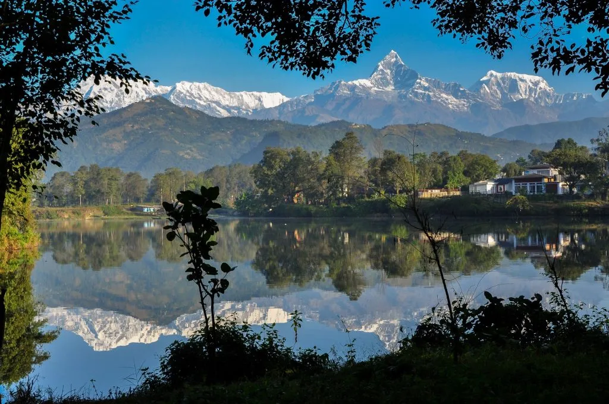
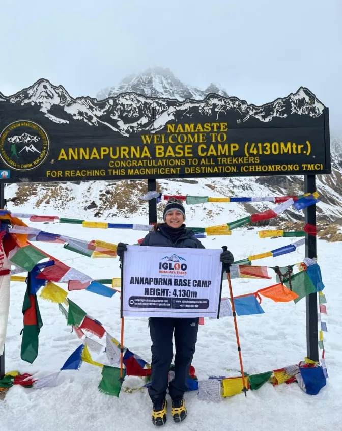
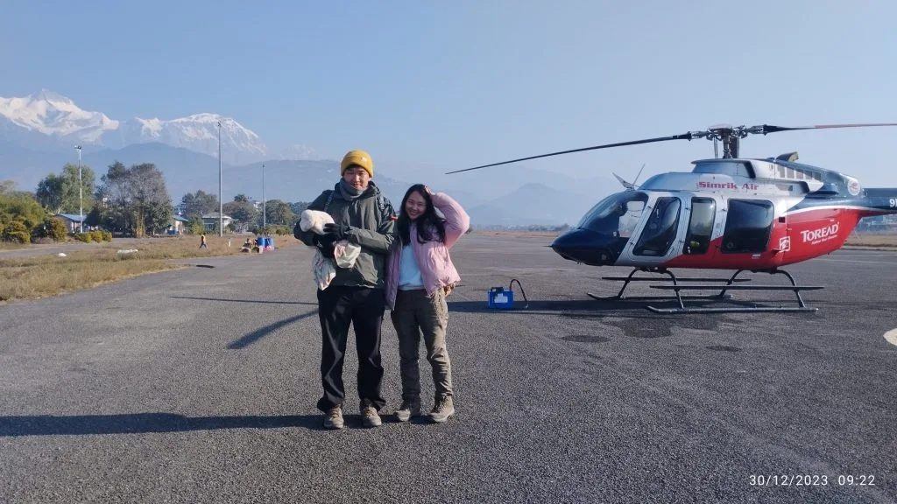
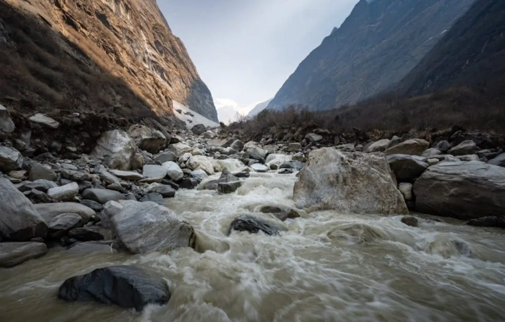

1. 2026/2027 Annapurna Base Camp Trek Cost Summary: Budget vs Standard vs Luxury Packages
Planning an expedition into the Annapurna Sanctuary requires understanding the distinct expense tiers available. Unlike Everest treks where round-trip domestic flights to Lukla cost upwards of $430 USD, the Annapurna region is accessible entirely by overland road transport from Pokhara, significantly reducing your overall expedition budget.
Trekking costs for 2026 and 2027 fall into three primary operational categories:
| Expense Category | Budget / Semi-DIY (USD) | Standard Guided (USD) | Luxury Package / Heli Return |
|---|---|---|---|
| ACAP & TIMS Permits | $38 | Included ($38 value) | Included |
| Licensed Guide (8 days) | $150 – $220 (shared) | Included ($260 value) | Senior Private Guide Included |
| Dedicated Porter (8 days) | $90 – $140 (shared) | Included ($180 value) | Private Porter Included |
| Ground Transport (Pokhara ↔ Siwai 4WD) | $35 – $50 (shared) | Included ($120 private) | Private 4WD Scorpio Included |
| Teahouse Lodging (7 nights) | $45 – $70 | Included | $400 – $800 (Deluxe Lodges) |
| Daily Meals & Hot Drinks (3 meals/day) | $200 – $260 | Included ($240 value) | A La Carte Gourmet Included |
| Trail Incidentals (Hot showers, charging, Wi-Fi) | $30 – $50 | $30 – $50 | Complimentary / Included |
| Helicopter Return (ABC to Pokhara) | N/A (Walk down) | N/A (Walk down) | $500 – $1,200 (Shared/Charter) |
| Total Estimated Cost: | $588 – $828 USD | $750 – $1,150 USD | $1,800 – $3,200 USD |

2. Mandatory National Park Permits: ACAP Entry & TIMS Card Fee Structure
To enter the Annapurna Sanctuary, every foreign trekker must hold two official government-issued permits. These permits fund trail maintenance, suspension bridge repairs, and conservation efforts managed by the National Trust for Nature Conservation (NTNC):
| Permit Name | Issuing Agency | Cost (NPR) | Cost (USD approx.) | Validity & Scope |
|---|---|---|---|---|
| Annapurna Conservation Area Permit (ACAP) | Department of National Parks / NTNC | NPR 3,000 + 13% VAT (NPR 3,390) | ~$26 USD | Single entry; valid for entire Annapurna region |
| TIMS Card (Trekkers' Information Management) | TAAN / Nepal Tourism Board | NPR 2,000 | ~$15 USD | Mandatory GPS security tracking card |
| SAARC Citizen ACAP Permit | NTNC | NPR 1,000 + 13% VAT | ~$8 USD | Discounted rate for SAARC passport holders |
| Total Mandatory Permit Cost: | NPR 5,390 | ~$41 USD | Checked at Birethanti, Chhomrong & ABC | |
Under updated regulations enforced by the Nepal Tourism Board (NTB) and TAAN, foreign trekkers are strictly prohibited from trekking independently without a licensed guide in the Annapurna Conservation Area. TIMS cards will only be issued through government-registered trekking agencies like Igloo Himalaya Treks.
3. Ground & Air Transportation: Kathmandu to Pokhara & 4WD Trailhead Jeep Fares
Your transportation budget covers two distinct legs: traveling between Kathmandu and Pokhara, and traveling between Pokhara and the mountain roadheads.

- Kathmandu to Pokhara Flight: A 25-minute flight with Yeti Airlines or Buddha Air costs $95 – $115 USD one-way per foreigner, offering stunning views of Langtang, Ganesh Himal, and Manaslu from the right side of the aircraft.
- Tourist Coach (Kathmandu ↔ Pokhara): Deluxe tourist buses (e.g., Jagadamba, Swift Holidays) cost $12 – $25 USD one-way, taking 6 to 8 hours along the Prithvi Highway with comfortable reclining seats and lunch stops.
- Private 4WD Jeep (Pokhara ↔ Siwai Trailhead): Hiring a private Mahindra Scorpio costs $60 – $80 USD one-way ($120 – $150 USD round-trip) for the entire vehicle, seating up to 5 passengers (~$15 to $20 USD per person).
- Local Bus / Shared Jeep: Departs from Pokhara Baglung Bus Park to Siwai via Nayapul (NPR 500 – 700 / ~$5 USD per person), taking 4.5 hours over bumpy terrain.
4. Teahouse Accommodation Rates Across Elevation (Siwai to ABC Lodges)
Accommodation in the Annapurna Sanctuary is based on family-run stone lodges. Room rates are standardized by local lodge management committees:
The Lodging-Meal Covenant: Just like the Everest region, teahouse operators offer cheap room rates on the condition that you purchase both dinner and breakfast in their dining hall. Failing to eat meals at your lodge results in a room surcharge of NPR 2,000 to NPR 3,000 ($15 to $23 USD) per night.
| Settlement | Altitude | Twin Private Room (NPR) | Twin Private Room (USD) | Attached Bathroom Availability |
|---|---|---|---|---|
| Ghandruk / Jhinu Danda | 1,780 m – 1,940 m | NPR 600 – 1,200 | $4.50 – $9.00 | Widely available (+NPR 1,500) |
| Chhomrong | 2,170 m | NPR 700 – 1,200 | $5.50 – $9.00 | Available at select lodges |
| Dovan / Bamboo | 2,310 m – 2,600 m | NPR 800 – 1,200 | $6.00 – $9.00 | Shared hall bathrooms only |
| Deurali | 3,200 m | NPR 1,000 – 1,500 | $7.50 – $11.50 | Shared indoor/squat toilets |
| Machapuchare Base Camp (MBC) | 3,700 m | NPR 1,200 – 1,800 | $9.00 – $14.00 | Communal dormitories / shared hall |
| Annapurna Base Camp (ABC) | 4,130 m | NPR 1,500 – 2,000 | $11.50 – $15.50 | Communal dormitories during peak season |
5. High-Altitude Dining Expenses: Daily Menu Prices, Dal Bhat, Hot Drinks & Boiled Water
Food represents your largest daily operational expense on the trail. Because food supplies must be carried up the steep staircases by porters or pack mules, prices increase proportionally with altitude.
A typical hiker spends between $25 and $35 USD per day for three hearty meals, afternoon snacks, and hot beverages.
| Menu Item | Price in Chhomrong (2,170 m) | Price in Dovan (2,600 m) | Price in ABC (4,130 m) |
|---|---|---|---|
| Traditional Vegetarian Dal Bhat (Free refills) | NPR 750 ($5.80) | NPR 850 ($6.50) | NPR 1,050 – 1,200 ($8 – $9.20) |
| Gurung Bread with Honey & Eggs | NPR 550 ($4.20) | NPR 650 ($5.00) | NPR 750 ($5.80) |
| Vegetable Fried Noodles / Chowmein | NPR 600 ($4.60) | NPR 700 ($5.40) | NPR 850 ($6.50) |
| Skillet Pizza (Cheese & Mushroom) | NPR 750 ($5.80) | NPR 850 ($6.50) | NPR 1,000 ($7.70) |
| Pot of Ginger Lemon Honey Tea (Medium) | NPR 800 ($6.20) | NPR 950 ($7.30) | NPR 1,200 ($9.20) |
| 1 Liter Boiled Drinking Water | NPR 150 ($1.20) | NPR 200 ($1.50) | NPR 300 ($2.30) |

6. Licensed Guide & Porter Wages, Insurance Standards & Tipping Guidelines
Hiring experienced, locally certified trekking staff ensures smooth navigation across the steep river canyon, secures teahouse reservations during peak months, and guarantees medical emergency assistance.
Standard daily wage rates for registered mountain professionals in the Annapurna region are:
- Licensed Trekking Guide: $30 – $38 USD per day. Includes guide wages, daily meals, accommodation, equipment allowance, and emergency rescue insurance. Guides speak fluent English and hold wilderness first aid certification.
- Dedicated Mountain Porter: $20 – $26 USD per day. Porters carry up to 20 kg of combined trekker luggage (typically shared between two hikers, 10 kg each), allowing you to walk with a light 5–6 kg daypack.
Tipping is customary at the end of the trek in Siwai or Pokhara. Standard guidelines recommend approximately 10% to 15% of the total trek package cost. For an 8-day trek, expect to tip roughly $80 – $120 USD to your guide and $60 – $80 USD to your porter from a party of two.
8. Trekking Gear Rental in Pokhara: Sleeping Bags, Down Jackets & Trekking Poles
You do not need to invest thousands of dollars purchasing expedition gear. Lakeside Pokhara features dozens of reputable outdoor gear rental shops where high-quality trekking equipment can be rented for minimal daily rates:
| Equipment Item | Daily Rental Rate (NPR) | Daily Rental Rate (USD) | Deposit Required |
|---|---|---|---|
| -10°C to -15°C Down Sleeping Bag | NPR 150 – 200 / day | $1.20 – $1.50 / day | NPR 5,000 ($40) or passport copy |
| 700-Fill Heavy Down Jacket | NPR 150 – 200 / day | $1.20 – $1.50 / day | NPR 5,000 ($40) or passport copy |
| Pair of Adjustable Trekking Poles | NPR 80 – 100 / day | $0.60 – $0.80 / day | NPR 2,000 ($15) |
| Waterproof 80L Duffel Bag | NPR 80 – 100 / day or included | $0.60 – $0.80 / day | NPR 2,000 ($15) |
Renting a four-season sleeping bag and warm down parka for an 8-day trek will cost you roughly $20 to $25 USD total, compared to $500+ USD to buy them brand new.
9. Helicopter Return Flights: Charter vs Per-Seat Rates from ABC Direct to Pokhara
For trekkers who want the thrill of hiking up to Annapurna Base Camp but wish to skip the knee-jarring 2- to 3-day descent down thousands of stone steps, taking a helicopter return from ABC to Pokhara is an increasingly popular luxury upgrade.

- Flight Duration: Exactly 20 minutes from the ABC helipad directly to Pokhara Domestic Airport, flying past the sheer south wall of Annapurna and soaring beside Machapuchare.
- Shared Seat Basis: During peak months (October, November, April, May), shared helicopter seats cost between $450 and $600 USD per person (based on 5 passengers sharing).
- Private Helicopter Charter: Chartering an entire 5-passenger helicopter costs between $1,800 and $2,200 USD total for the private aircraft.
10. Mandatory Travel & High-Altitude Rescue Insurance (up to 4,500 m)
Comprehensive travel insurance covering emergency medical treatment and helicopter evacuation up to at least 4,500 meters (15,000 feet) is mandatory for all trekkers entering the Annapurna Conservation Area.
Without insurance, a private emergency helicopter evacuation from Annapurna Base Camp to Pokhara or Kathmandu costs between $2,500 and $3,500 USD out-of-pocket. Reputable adventure insurance policies from providers such as World Nomads (Standard or Explorer), Global Rescue, or Allianz typically cost $100 to $160 USD for a two-week Nepal trip.
11. Trail Banking Realities: Currency Exchange, Pokhara ATMs & Cash Planning
The entire Modi Khola gorge operates on physical cash in Nepalese Rupees (NPR). Credit cards are not accepted at teahouses above Siwai. There are zero ATMs along the entire Annapurna Base Camp trail.
Cash Withdrawal Strategy: Withdraw all estimated on-trail spending cash in Pokhara before departing for the trailhead. We recommend budgeting NPR 4,000 to NPR 5,000 ($30 to $38 USD) per person per day in local currency, carrying medium denominations (NPR 500 and NPR 1,000 notes) in a waterproof pouch.
12. Cost Comparison: Annapurna Base Camp vs Everest Base Camp vs Mardi Himal
How does the total expense of an Annapurna Base Camp trek compare to other premier routes in Nepal?
| Trekking Route | Standard Duration | Domestic Flights Required? | Average All-Inclusive Cost | Value Rating |
|---|---|---|---|---|
| Annapurna Base Camp (ABC) | 8 – 10 Days | No (Overland 4WD) | $750 – $1,150 USD | ★★★★★ (Best High-Alpine Value) |
| Mardi Himal Trek | 5 – 6 Days | No (Overland 4WD) | $450 – $650 USD | ★★★★☆ (Best Budget Short Trek) |
| Classic Everest Base Camp (EBC) | 12 – 14 Days | Yes (Lukla flights $430+) | $1,350 – $1,750 USD | ★★★★☆ (Iconic but Expensive) |
| Annapurna Circuit (Full Loop) | 14 – 18 Days | No (Overland Jeep) | $1,100 – $1,550 USD | ★★★★★ (Classic Long Expedition) |

13. 7 Proven Tips to Save $200–$400 on Your Annapurna Trek Without Sacrificing Safety
Maximize your savings while maintaining safety, warmth, and nutrition with these expert tips:
- Purify Your Own Water: Buying 3 liters of boiled water daily costs $6 to $9 per day ($60+ total). Bring a Sawyer Squeeze filter or Aquatabs chlorine dioxide tablets to treat lodge tap water for free.
- Rent Gear in Pokhara: Rent your down jacket and -10°C sleeping bag in Lakeside Pokhara for under $1.50 per day rather than buying expensive new gear overseas.
- Always Order Dal Bhat for Dinner: Dal Bhat is the only meal that comes with free unlimited refills of rice, lentil soup, and vegetable curry—giving you the highest caloric return per rupee.
- Carry a 20,000 mAh Power Bank: Charging your phone and camera battery costs up to $3 per charge at high lodges. A fully charged power bank saves you $25 to $35 over the trek.
- Share a Private Jeep from Pokhara: Team up with other trekkers in Pokhara to split the $70 4WD jeep fare to Siwai, reducing your transport cost to under $18 per person.
- Buy Trail Snacks in Pokhara Supermarkets: Snickers bars, mixed nuts, and electrolyte powder cost 3x to 4x more at Deurali and ABC than in Lakeside grocery stores.
- Take Local Tourist Buses between KTM and Pokhara: A comfortable tourist coach costs $15 compared to a $105 domestic flight, saving $180 round-trip for flexible travelers.
14. Frequently Asked Questions: Annapurna Base Camp Trek Cost 2026/2027
Get immediate, expert answers to the most common budgeting questions for the 2026 and 2027 Annapurna Base Camp trekking seasons.

Ready to Experience the Himalayas?
Whether you are preparing for high-altitude trekking, cultural circuits, or alpine summit expeditions, start planning a bespoke journey tailored to your fitness, travel season, and style.